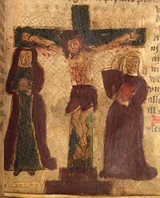

Overview
This page is a side branch from our Christo-Pagan page, Jesus & Paganism, to explain how it came that the Christian Churches do not in any way represent Jesus or his teachings. It may be useful to many other thoughtful persons as well, to explain the reasons for what they can easily see.
Paul
Paul was a short, bald man, but otherwise had some outstanding advantages in his life. He was a Jew, but had been born a Roman citizen. The details of his citizenship are unknown, but it gave him freedom to travel throughout the Roman Empire. He was well educated, a Pharisee, and held high status in the Jewish community.
Paul, under his original name, Saul of Tarsus, was an aggressive persecutor of the followers of Jesus. On an expedition to Damascus for the purpose of bringing followers of Jesus back to Jerusalem for trial, his story is that he was converted by an apparition of Jesus. Either that, or he came up with a better idea on how to screw the followers of Jesus.
Paul's Epistles (letters to the churches) are not easy reading, because of his penchant for paragraph long sentences that are often wandering. His rehtoric seems deliberately tangled, as if trying to snow his audience with logic they cannot follow, thus reinforcing his image as a sophisticate. The material on Paul in Luke's Acts is clearly not first hand from Paul, as Luke's theology often does not match that stated in Paul's Epistles.
Justification by Faith Alone
Perhaps the most damaging of Paul's teachings is the persistent assurance that one finds salvation only through faith, and this salvation does not depend on following the law, or not following the law, or how you treat your fellow man.
Paul formulated this renegade teaching immediately after his "conversion", or perhaps before, as he is already preaching salvation by belief alone in Acts XIII 39-41 & subs.
This relieves the church and its "faithful" from any retribution from God, even for crimes against humanity, which the church and its "faithful" have engaged in rather freely. According to Paul, you need only believe in Jesus, and you're home free. Contrast this to Jesus teaching: the "Hell of Fire" awaits you.
Paul states this clearly in many places. For example, he asks rhetorically what kind of law and what kind of works would earn salvation? He answers that these will have no effect, but only faith. He concludes that man finds salvation by faith, completely apart from law and works (Romans III 27-28).
This is directly rebutted by James, brother of Jesus, who certainly
knew a thing or two about Jesus' teachings (James II 24). "You see
that by works a man is justified and not by faith alone."
The Law of Moses
Jesus not only supported the Laws of Moses (10 commandments), he even expanded on them. In the Sermon on the Mount, he warned not to imagine he came to destroy the law or the prophets - but to fulfill the laws and prophecy (Mat V 13-48, VI 1-8). He than goes through commandments and laws and interprets them far beyond the literal.
Paul has little use for the Law of Moses, or any other laws, and here extends his thesis of salvation by belief alone, no matter what. Paul says to deploy the members (of the church) as weapons of righteousness under God's will. Then their sins will not matter because they are not subject to the law, for they are under the grace of God (Rom VI 14).
Further, Paul states that God's righteousness has been shown by
the law and the prophets. In the eyes of God there must be faith
in Jesus Christ for all have sinned and fall short of God's standards
(Rom III 21-26). See Original Sin. In other
words, there is no distinction between the serial murderer and one who
followed the laws, kept the Sabbath, and cared for the poor. Clearly
then, there is no incentive to live an honest and charitable life.
This attitude is lamentably prevalent among Christians, but is totally
incompatible with the teachings of Jesus, and Jesus is the final
judge. Lets hear it for the "Hell of Fire"!
Original Sin
Original sin was a concept heavily promoted by Paul. It seems to have one Old Testament precedent in Psalm 51:5, though Adam and Eve aren't mentioned there. In Paul's system, it was essential that every person be steeped in sin so the ax murder and the Sunday school teacher had equal need for salvation by belief in Jesus. This guilt is from a sin committed by Adam and Eve, inescapable, not removed by baptism or good works, and more severe than any other sin - direct disobedience of God.
Jesus makes no mention of original sin, and holds good works to
be the path to salvation, belief or no.
Photo by Ethan Doyle White distributed under license
Creative Commons
Attribution-Share Alike v4.0 International.
Sins Washed Away in Blood of Jesus
 Paul taught that to achieve salvation one must be sinless, and, with Original Sin you have no hope of erasing your sins. So, Jesus died on the cross specifically to "wash away your sins" by his sacrifice. Absent sin, salvation can be achieved by faith alone. It is very difficult to make sense of this doctrine, but we need not even try. There is no mention by Jesus or anyone else in the Gospels that Jesus died on the cross to wash away your sins. This was all made up by Paul, and preached by Paul, and by Paul's followers in accordance with his doctrine, and by the Churches he founded. It was not preached by followers of the teachings of Jesus.
Jesus taught that salvation came not from faith alone, but from
repentance, and especially by good works and compassion, faith or no.
His death on the cross was to fulfill prophecy, and had no bearing
on your sins.
Suppression of Women
The churches have long suppressed the roll of women and their place in the church and in society. This is not from Jesus, who elevated women, and in the very early church women and men were treated almost equally. The suppression of women that they are rebelling against in our time comes directly from Pauline Christianity.
Paul despised women, and in his writings leaves no doubt. He states very firmly that woman should be silent in all assemblies of the faithful, and not be permitted to speak. He orders them to place themselves in obedience and subjugation, "as the law says" He further says that if a woman wants to learn things, they should ask their own husbands at home. He states firmly that it is disgraceful for a woman to speak in an assembly of the faithful. (1Cor XIV 33-34).
Paul demanded that women stay in the home, bearing children (preferably male), cooking, and cleaning. He states that, "after mature consideration", he urges younger widows to marry, bear children, and manage household affairs - avoiding idle hands that are the tools of the Devil, and claims some widows have already turned to Satan (1Tim V 14)."
Paul demanded that wives be constantly subjugating themselves with unquestioning obedience to their husbands in all things, as a man ought to do to the Lord. (Colos III 18) and (Ephes V 22-24). According to Paul, there's not much difference between a wife and a Slave.
Jesus, on the other hand, elevated women to a degree very uncommon in his day. He even chastised a woman, Martha, for rushing around preparing food, while here sister Mary sat at his feet listening to his teachings. Martha complained to Jesus that he should send Mary to the kitchen. Jesus admonished her for being worried and excited about many things while few were needed or useful. He tells her that Mary chose the best course, that of listening to his teachings and should not be snatched away from them (Luke X 38-42).
It was probably under the influence of Paul that Mary Magdalene, a
well to do woman who helped finance Jesus' mission from her own resources,
was recast as a repentant prostitute.
Photo by Mak Thorpe distributed under license
Creative Commons
Attribution-ShareAlike v2.5 Generic.
Slavery
 While Jesus never taught against slavery, he may have included
slaves among the "least ones" and how they would be raised above the
powerful in The Kingdom. Paul commands slaves that they must obey
the master without question.
While Jesus never taught against slavery, he may have included
slaves among the "least ones" and how they would be raised above the
powerful in The Kingdom. Paul commands slaves that they must obey
the master without question.
Paul demands that slaves put themselves in subjection to their masters with total obedience in all things. He says to give him satisfaction, not to cross him or pilfer his supplies, but to show total trustworthiness. (Tit II 9-10).
Paul tells slaves to be always obedient to their masters, "with
fear and trembling" and holding them (the masters) in their hearts
as they would the Christ, and serving the master as if doing the
will of God, rendering service to the master as if to the Lord.
(Eph VI 9-10)
The Church
Jesus was a traveling preacher with a small following of desciples who traveled with him. He met with small, informal congregations, mostly in peoples homes. His only mention of the word "church" was to say, of Simon, a simple fisherman, that he was the Rock [Petros, Peter], and on this massive rock he would build his Church. (Mat XVI 18). Jesus made no other ecclesiastical appointments whatever, and suggested no formal church structure.
Paul traveled throughout the Roman Empire, setting up a wide structure of interlinked churches, with an authoritarian clergy, and all devoted to a standardized doctrine, based not on the teachings of Jesus, but on his own teachings in contradiction to Jesus' teachings.
Nearly a third of the New Testament consists of Paul's letters
aimed at maintaining control of the churches and promoting his
standardized doctrine. In Paul's churches, Jesus was little more
than a name. The churches of today are descended from Paul's churches,
and do not represent Jesus in any way, they exploit him.
Photo of Helsinki Lutheran Cathedral by Hans Hillewaert
distributed under license Creative Commons
Attribution-ShareAlike v3.0 Unported.
Disclaimer
 I am not a
Christo-Pagan - but I do know a lot about Paganism, and a lot about
early Christianity. I have been a subscriber to Biblical Archaeology
for several decades, and have done many other studies, including reading
the Gospels all the way through.
I am not a
Christo-Pagan - but I do know a lot about Paganism, and a lot about
early Christianity. I have been a subscriber to Biblical Archaeology
for several decades, and have done many other studies, including reading
the Gospels all the way through.
I am a largely non-theist Pagan, but have recently been doing some work with Freya, who seems to be branching out from her Germanic roots - note her very India style pose and Japanese companion (Shinto I presume).
Due to time limitations for original research, I followed a number of suggestions by Davis D. Danizier, from his Web site and his book, Betrayal of Jesus. My reference for all material from the New Testament is the 1961 Kenneth S. Wuest translation from the Greek. I have rephrased for clarity (and copyright matters) but have provided gospel links so you can refer directly to the Gospel passages. I recommend the Wuest translation, but others will work too.
I recommend against the King James Bible, which was composed under his orders to make it conform to the doctrines of the Church of England, and to his own obsession with hunting witches, which caused the deaths of thousands of innocent people, mostly women. I have no respect whatever for King James, and strong suspicion of his Bible.